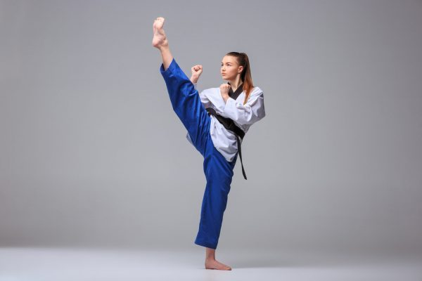
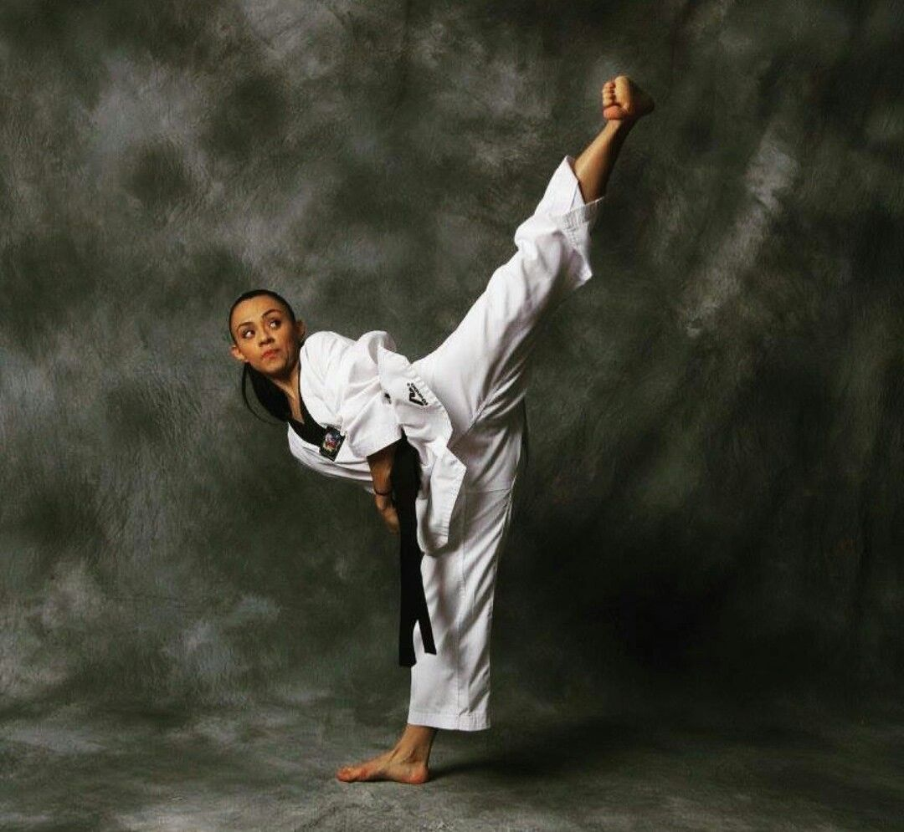
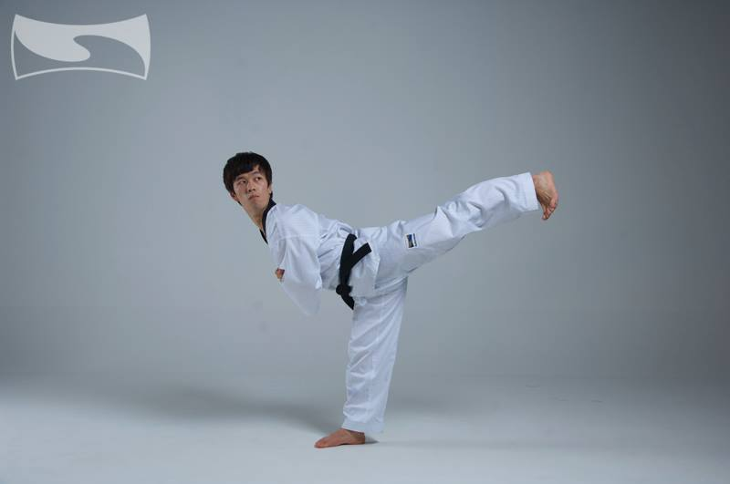
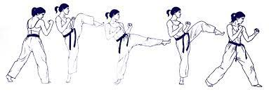
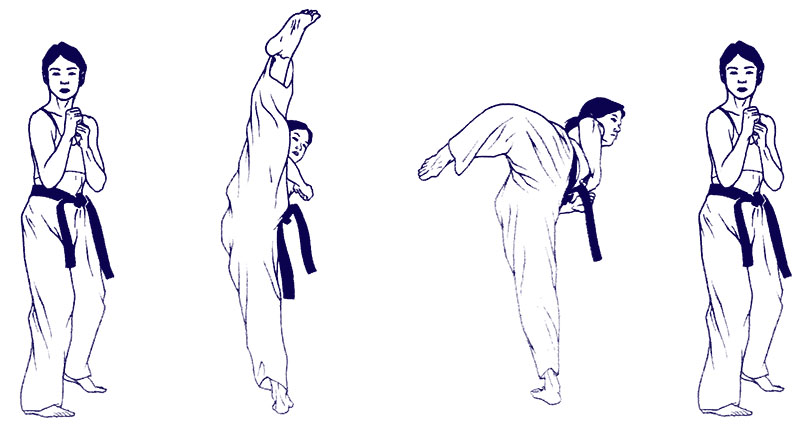

Description: The content of this page is related to the martial art of Korean origin called taekwondo, which was created in 1955 by General Choi Hong Hi, who also created the International Taekwondo Federation in 1966 in Canada.
Description: The content of this page is related to the martial art of Korean origin called taekwondo, which was created in 1955 by General Choi Hong Hi, who also created the International Taekwondo Federation in 1966 in Canada.
| Categories | Data |
|---|---|
| Other names | T'aekwŏndo, taekwon-do, o taegwondo |
| Origin | 1945, made official in 1955 in Seoul. |
| Creator | General Choi Hong Hi |
| Five principles of taekwondo |
|
| What's the meaning of your name |
|
| Where do your movements come from? | It come from ancient arts such as Kung-fu/wushu chin, Korean Taekkyeon and Japanese Karate Do |
| Kind of sport | korean traditional martial art | In how many countries is Taekwondo practiced? | Taekwondo is present in 120 countries around the world |
It emerged in Korea in the 1950s. The creator of the sport was General Choi Hong Hi who practiced taekkyon in his childhood and when he was 20 years old he was sent to Japan, where he also practiced Karte-do.
Hong Hi participated in the Second World War where he participated in the Japanese army and was detained for conspiracy for eight months in Pyongyang, during which time he decided to merge the two martial arts he knew to give rise to the Oh Do Kwan which became a technique of fight for the army.
In 1954 Hong Hi brought together a series of Korean historians, instructors and leaders to give his martial art a more appropriate name, being in 1955 when the sport began to be practiced under the name of taekwondo.
The taekwondo uniform is made up of three parts that are:
Some attacks are:
Some defenses are:
Ap Chagui: it is performed by raising the bent knee and then straightening the leg by launching the kick at waist height, with the aim of pushing the opponent.

Yop Chagui: it is performed by raising the knee while turning the body 90 degrees and then, with the body on its side, stretch the leg forcefully towards the opponent.

Dwi Chagi: it is performed by turning on the back from the initial position and then bending the knee and straightening the leg in order to hit the opponent with the heel.

Bandae Yop Chagui: it is performed by turning on the back from the initial position and then bending the knee and doing a Yop Chagui

Huryeo Chagui: It is performed by raising the leg completely straight at the height of the opponent's head, and then rotating it so that it returns to the floor.

Informacion personal